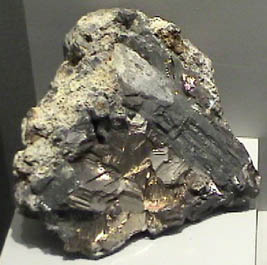
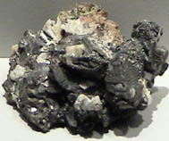
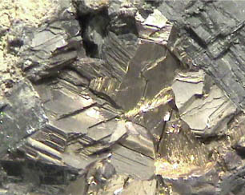

Bismuth
Bismuth is a brittle metal with a silvery color showing a reddish tinge. It expands slightly upon freezing. Its principal use is in making low melting point alloys.
Bismuth is found in elemental form or as the sulfide Bi2S3 (bismuthinite) or oxide Bi2O3. It also forms a sulfide with copper called emplectite, CuBiS2.
|

|

Bismuth is one of the few elements which can be found in nature in pure form. These samples of bismuth are displayed in the Smithsonian Museum of Natural History. The sample at left and in the closeup below is about 18x18 cm and is from Carmen mine, Huayna, Potosi, Bolivia. The sample directly above is about 5x4 cm and is from Schneeberg, Sachsen, Germany.
|

|
Index
Periodic Table
Chemistry concepts
Reference
Pauling
Ch. 16 |